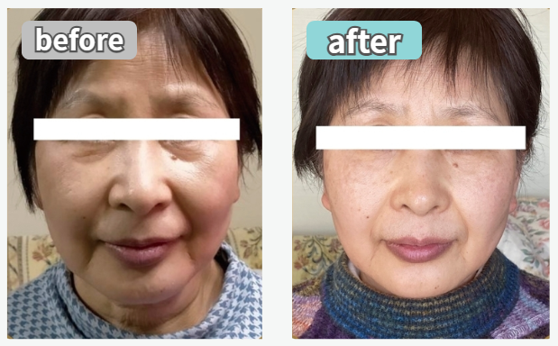
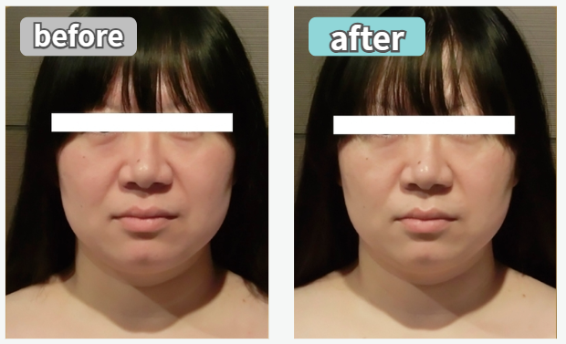
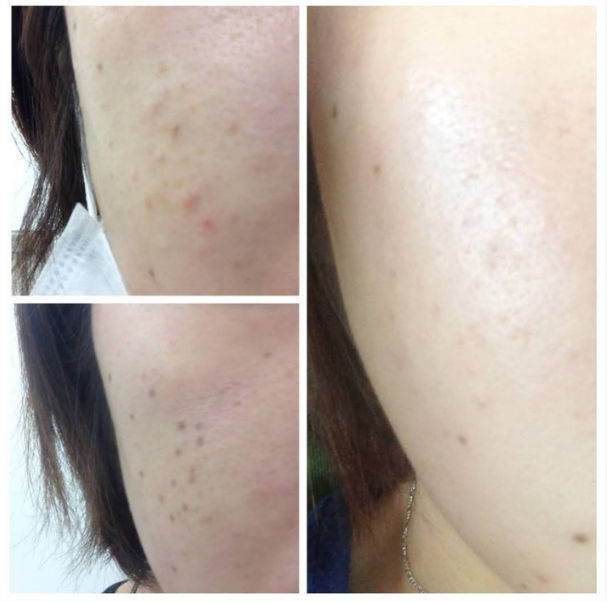

家族が驚く即効性！たるみもスッキリ施術直後から肌がしっとり
家族が驚くほど顔がシャープに小さく！ たるみもスッキリの即効性を実感。たるみにお悩みの方に断然おすすめです！
VOICE
【エステ】効果を実感！お客様の声
家族が驚く即効性！たるみもスッキリ施術直後から肌がしっとり
家族が驚くほど顔がシャープに小さく！ たるみもスッキリの即効性を実感。たるみにお悩みの方に断然おすすめです！
体の奥から温まり、滑らかな上半身に
じんわり温かく体の奥底まで届くハイパーナイフ。老廃物が流れ、施術後は体が滑らかになるのを実感できました。
肩こり解消＆目元パッチリ！最高のご褒美
温かく超絶気持ちいい！ 1回で肩こりが軽くなり、フェイスラインと目元もスッキリ！ 疲れを取る最高のご褒美です。
マッサージ以上の感動！長年のシミにも変化が
最高に気持ちいい！マッサージとは違う新感覚。続けていたらシミも薄くなりました！継続して美肌を目指します。
【お店・スタッフ】信頼と癒しの声
長年の信頼！お肌の基礎を教えてくれるお店
長年通っていますが、いつも親切なスタッフの皆様に癒されます。スキンケアの基礎を教えてくれる安心しておまかせできるお店です。
親切な接客と個室で心からリラックス
感じの良いお店の雰囲気で安心して施術を受けられました。個室でリラックスでき、スタッフさんの親切な接客にも大満足です。
初めてでも安心！丁寧な説明で不安なし
スタッフさんが丁寧に説明してくれたので、初めての体験でもとても安心して施術を受けることができました。
お客様の感想であり、効果には個人差があります。
あくまで個人の感想であり、全ての方に同様の効果を保証するものではありません。
before / after



お客様の感想であり、効果には個人差があります。
あくまで個人の感想であり、全ての方に同様の効果を保証するものではありません。